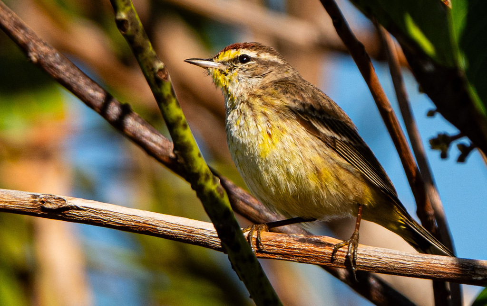

- One of the most ground-loving warblers in North America — it walks rather than hops, and bobs its tail almost without stopping. It is also one of only three Setophaga warblers (alongside Prairie and Kirtland's) that pump their tails incessantly. Researchers think the habit may serve as a pursuit-deterrent signal, telling watching predators: 'I see you, I'm quick, don't bother.'
- Despite the name, it rarely perches in palms. The name traces to 1789, when German naturalist Johann Friedrich Gmelin described the species from a wintering specimen collected on the palm-rich Caribbean island of Hispaniola — not from any real affinity for the trees.
- Two subtly different forms visit Florida each winter: the brighter 'Yellow' Palm Warbler along the Gulf Coast and the drabber 'Western' form along the Atlantic side, with both mixing across the peninsula.
- It heads north earlier than almost any other warbler, sometimes beating other species back to the boreal forest by nearly two months.
A small, somewhat stocky brownish-olive warbler with bright yellow undertail coverts visible in every plumage and season. Upright, pipit-like posture on the ground; tail bobs nearly without pause.
Rusty chestnut cap, yellow eyebrow stripe, dark eyeline, and rufous streaking on the breast. Eastern 'Yellow' birds are more extensively yellow below; western birds show a whitish belly with yellow restricted to the undertail and throat.
Cap turns dull brown, overall impression is washed-out and pale. The yellow undertail coverts and pale eyebrow remain the most reliable marks. Rufous breast streaking is still present but fainter.
Song is a weak, buzzy, monotonous trill — described as similar to a Chipping Sparrow but slower and less crisp. Call is a sharp 'chek' or 'tsip,' often given in flight.
Bright yellow undertail coverts flashing with each tail-bob are the single most reliable field mark year-round. Also look for a pale eyebrow stripe, a dark line through the eye, and a subtle rusty wash to the breast streaks. The upright, ground-walking posture distinguishes it instantly from most other warblers.
Primarily insects — beetles, flies, caterpillars, aphids, and spiders — picked from the ground or low shrubs, with occasional aerial sallies for flying prey. In winter, also eats berries and seeds including bayberry, sea grape, and hawthorn.
Check open grassy or weedy areas, low shrubs, and ground-level leaf litter throughout the park. Palm Warblers spend far more time on the ground than other warblers, so scan low rather than up into the canopy. They often associate with sparrows and Yellow-rumped Warblers in loose winter flocks. The tail-bob is visible from a distance.
A reliable winter visitor, typically present from October through early April. Most active during daylight hours. Peak numbers occur mid-November through February. Spring departure begins in late February and early March; the species moves north earlier than almost any other warbler.
Observe and enjoy.

- © Rob Carr (CC-BY-NC), via iNaturalist